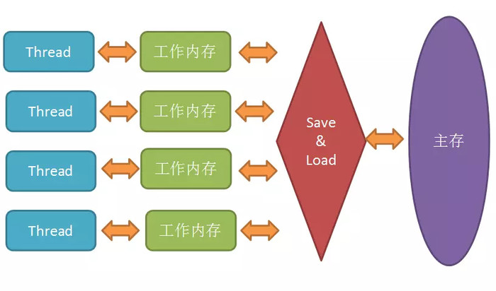
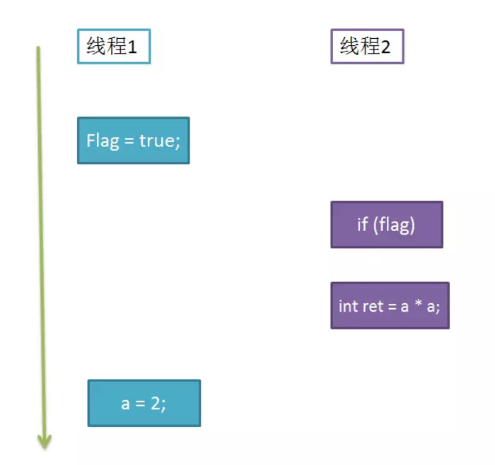

JMM&volatile关键字
Java 内存模型 (JMM)

JMM 规定所有变量都存在主存中，每个线程又有自己的工作内存，可以理解成 CPU 上的高速缓存。所以，线程的操作都是以工作内存为主，它们只能访问自己的工作内存，且工作前后都要把值同步回主存。
主内存：主内存被所有的线程共享，对于一个共享变量，主内存中存储的就是它“本尊”。
工作内存：每个线程都有自己的工作内存，对于共享变量来说，工作内存中存储的是它的“副本”。
在线程执行时，首先会从主存中 read 变量值，再 load 到工作内存中的副本中，然后再传给处理器执行，执行完毕后再给工作内存中的副本赋值，随后工作内存再把值传回给主存，主存中的值才更新。
使用工作内存和主存，虽然加快的速度，但是也带来了一些问题。举个例子：
1 | i = i + 1; // 假设i初值为0 |
如果两个线程按照上面的执行流程，那么 i 最后的值居然是 $1$。如果最后的写回生效的慢，再读取 i 的值，都可能是 $0$，这就是缓存不一致问题。
JMM 主要就是围绕着如何在并发过程中如何处理原子性、可见性和有序性这 $3$ 个特征来建立的，通过解决这三个问题，可以解除缓存不一致的问题。而 volatile 跟可见性和有序性都有关。
原子性
Java 中，对基本数据类型的读取和赋值操作是原子性操作，所谓原子性操作就是指这些操作是不可中断的，要么做完，要么就没有执行。
1 | i = 2; // 读取操作，是原子的 |
JMM 只实现了基本的原子性，像上面 i++ 那样的操作，必须借助于 synchronized 和 Lock 来保证整块代码的原子性。线程在释放锁之前，必然会把 i 的值刷回到主存的。
可见性
一个线程修改共享变量，能够被其它线程同时感知。
Java 利用 volatile 来提供可见性。 当一个变量被 volatile 修饰时，那么对它的修改会立刻刷新到主存，当其它线程需要读取该变量时，会去内存中读取新值。其实通过 synchronized 和 Lock 也能够保证可见性，线程在释放锁之前，会把共享变量值都刷回主存，但是 synchronized 和 Lock 的开销都更大。
有序性
JMM 是允许编译器和处理器对指令重排序的，但是规定了 as-if-serial 语义，即不管怎么重排序，程序的执行结果不能改变。
比如下面的程序段：
1 | double pi = 3.14; //A |
上面的语句，可以按照 A->B->C 执行，也可以按照 B->A->C 的顺序执行，因为 A、B 是两句独立的语句，而 C 则依赖于 A、B，所以 A、B 可以重排序，但是 C 却不能排到 A、B 的前面。JMM 保证了重排序不会影响到单线程的执行，但是在多线程中却容易出问题。 比如这样的代码:
1 | int a = 0; |
线程 $1$ 先执行 write，随后线程 $2$ 再执行multiply，最后 ret 的值一定是 $4$ 吗？

如图所示，write 方法里的 $1$ 和 $2$ 做了重排序，线程 $1$ 先对 flag 赋值为 true，随后执行到线程 $2$，ret 直接计算出结果，再到线程 $1$，这时候 a 才赋值为 $2$。这时候可以为 flag 加上 volatile 关键字，禁止重排序，可以确保程序的有序性，也可以上重量级的 synchronized 和 Lock 来保证有序性,它们能保证那一块区域里的代码都是一次性执行完毕的。
volatile 关键字如何满足并发编程的三大特性？
volatile 之所以能有这样的特性，得益于 Java 当中的先行发生原则。
先行发生原则（happens-before）：如果一个事件必须发生在另一个事件之前，结果必须反映，即使这些事件是乱序执行的。这里的事件指的是各种指令操作，比如读写、初始化、锁。
<<JSR-133：Java Memory Model and Thread Specification>> 定义了如下 happens-before 规则：
程序顺序规则：一个线程中的每个操作，happens-before 于该线程中的任意后续操作。
监视器锁规则：对一个线程的解锁，happens-before 于随后对这个线程的加锁。
volatile 变量规则： 对一个 volatile 域的写，happens-before 于后续对这个 volatile 域的读。
传递性：如果A happens-before B ,且 B happens-before C, 那么 A happens-before C。
start() 规则： 如果线程 A 执行操作 ThreadB_start()(启动线程B) , 那么 A 线程的 ThreadB_start() happens-before 于 B 中的任意操作。
join()原则：如果 A 执行 ThreadB.join() 并且成功返回，那么线程 B 中的任意操作 happens-before 于线程 A 从 ThreadB.join() 操作成功返回。
interrupt() 原则： 对线程 interrupt() 方法的调用先行发生于被中断线程代码检测到中断事件的发生，可以通过 Thread.interrupted() 方法检测是否有中断发生。
finalize() 原则：一个对象的初始化完成先行发生于它的 finalize() 方法的开始。
$(1)$ 规定线程每次修改变量副本后立刻同步到主内存中，用于保证其它线程可以看到自己对变量的修改。
$(2)$ 规定线程每次使用变量前，先从主内存中刷新最新的值到工作内存，用于保证能看见其它线程对变量修改的最新值。
$(3)$ 为了实现可见性内存语义，编译器在生成字节码时，会在指令序列中插入内存屏障来防止指令重排序。
总结 volatile 的两个特性
- 保证变量在线程之间的可见性，不能保证原子性。
- 阻止编译和运行时的指令重排，保证有序性。
volatile 底层实现机制
生成汇编代码可以发现 volatile 关键字的代码多出一个 lock 前缀指令，它相当于一个内存屏障。
内存屏障提供了以下功能：
- 重排序时不能把后面的指令重排序到内存屏障之前的位置 。
- 写入动作会引起别的 CPU 或者别的内核无效化其 Cache，相当于让新写入的值对别的线程可见。
- 使得本 CPU 的 Cache 写入内存。
volatile 和 synchronized 区别
- 关键字 volatile 是线程同步的轻量级实现，所以 volatile 性能肯定比 synchronized 要好，并且只能修改变量，而 synchronized 可以修饰方法，以及代码块。
- 多线程访问 volatile 不会发生阻塞，而 synchronized 会出现阻塞
- volatile 能保证数据的可见性，但不能保证原子性；而 synchronized 可以保证原子性，也可以间接保证可见性，因为它会将私有内存和公共内存中的数据做同步
- 关键字 volatile 解决的下变量在多线程之间的可见性；而 synchronized 解决的是多线程之间资源同步问题
volatile 的应用
(1) 状态量标记
1 | int a = 0; |
这种对变量的读写操作，标记为 volatile 可以保证修改对线程立刻可见。比 synchronized,Lock 有一定的效率提升。
(2) 单例模式，双重检查锁定(DCL)
经典的懒汉式单例实现
1
2
3
4
5
6
7
8
9
10
11public class Singleton {
private static Singleton singleton;
private Singleton() {
}
public static Singleton getInstance() {
if (singleton == null) {
singleton = new Singleton();
}
return singleton;
}
}在多线程的情况下，多个线程有可能会同时进入
if (singleton == null)，执行了多次singleton = new Singleton()，从而破坏单例。允许指令重排序的单例模式
1
2
3
4
5
6
7
8
9
10
11
12
13
14
15public class Singleton {
private static Singleton singleton;
private Singleton() {
}
public static Singleton getInstance() {
if (singleton == null) {
synchronized (Singleton.class) {
if (singleton == null) {
singleton = new Singleton();
}
}
}
return singleton;
}
}以上代码在检测到
singleton==null后，会在同步块中再次判断，可以保证同一时间只有一个线程可以初始化单例。但仍然存在问题，原因就是 Java 中singleton = new Singleton()语句并不是一个原子指令，而是由三步组成：- 为对象分配内存
- 初始化对象
- 将对象的内存地址赋给引用
但是经过指令重排序后，会变成：
- 为对象分配内存
- 将对象的内存地址赋给引用（会使得
singleton != null） - 初始化对象
所以存在一种情况，当线程 A 已经将内存地址赋给引用时，但实例对象并没有完全初始化，同时线程 B 判断 singleton 已经不为 null，就会导致 B 线程访问到未初始化的变量从而产生错误。
避免初始化指令重排序的单例模式
1
2
3
4
5
6
7
8
9
10
11
12
13
14
15public class Singleton {
private static volatile Singleton singleton;
private Singleton() {
}
public static Singleton getInstance() {
if (singleton == null) {
synchronized (Singleton.class) {
if (singleton == null) {
singleton = new Singleton();
}
}
}
return singleton;
}
}代码对 singleton 变量添加了 volatile 修饰，可以阻止局部指令重排序。